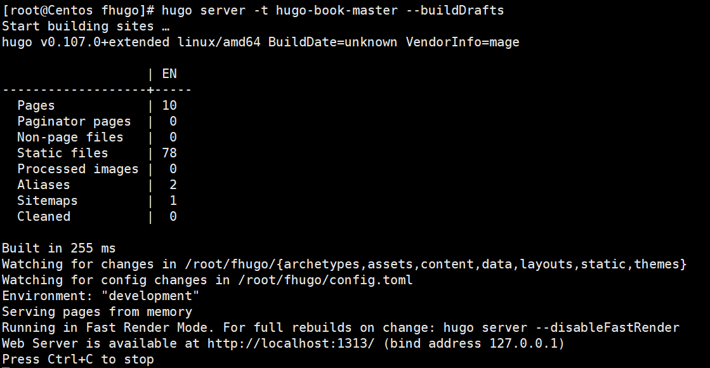

hugo搭建 #
创建网站
hugo new site fhugo
cd fhugo
git init
#拉取主题
git submodule add https://github.com/tohn/linkshrubbery.git themes/linkshrubbery
添加内容
hugo new post/first.md
本地启动个人博客
hugo server -t hugo-book-master --buildDrafts

将个人博客部署到远端服务器
创建GitHub仓库
cd /fhugo
hugo --theme=hugo-book-master --baseUrl="https://zhuangzetao.github.io/" --buildDrafts
cd public/
git init
git add .
（git remote add origin https://github.com/zhuangzetao/zhuangzetao.github.io.git）
git remote set-url origin https://ghp_NL1lA176SkVdA
0nusKKBNkASS2wItk2eQDR1@github.com/zhuangzetao/zhuangzetao.github.io.git[root@Centos public]# git push -u origin master
git commit -m "我的hugo"
git push -u origin master
使用Nginx服务器部署
在生成的public文件下把东西cp到/usr/share/nginx/html

linux下配置Git
git config --global user.name "zhuangzetao"
git config --global user.eamil "513957639@qq.com"
#获取公钥
ssh-keygen -t rsa -C "513957639@qq.com"
(一直按回车即可)
cat ~/.ssh/id_rsa_pub
ssh -T git@